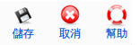

Super Administrator
Super Administrator  Administrator
Administrator  Manager
Manager
編輯群組成員.
To access this screen use: Components -> EventList -> Add Group 或 點選群組Title
Super Administrator Administrator Manager

儲存: 儲存資料並返回前一頁.
取消: 取消這次修改的資料.
幫助: Opens this help screen.
群組名稱: 填入群組名稱.
細節: 填入群組相關細節.
Maintainer: 左列表列出Joomla的會員, 右列表列出該群組成員, 點選成員之後 可透過箭頭新增或移除該群組成員.